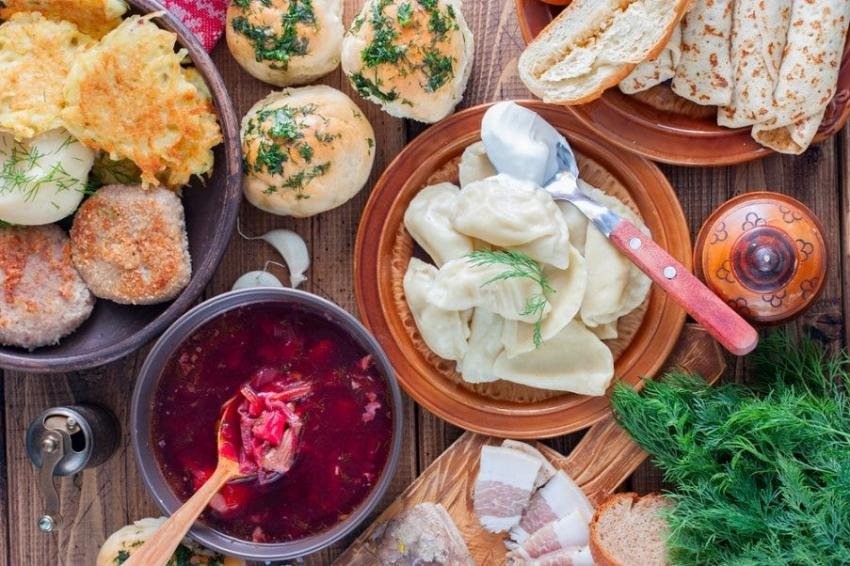

Україна – найбільша країна на континенті, величиною 603,628 квадратних кілометрів.
Франція посідає друге місце з територією 551,695 квадратних кілометрів.
На нашій території є 7 об'єктів всесвітньої спадщини ЮНЕСКО, серед яких Софійський собор і Херсонес.
Країна – в серці Європи. Географічний центр Європи розташований в Україні.
Тут є міста-привиди.
Чорнобиль – місто, де відбулася наймасштабніша в історії людства аварія на атомній електростанції.
Дотепер територія, де відбулася техногенна катастрофа, вважається зоною відчуження.
Львів – столиця кав'ярень. Найбільша кількість кафе на душу населення є саме у Львові.
У Львові винайшли гасову лампу. Львів також може похвалитися винайденням першої у світі гасової лампи.
Тунель кохання
Популярний туристичний об'єкт, розташований біля селища Клевань у Рівненській області.
Це зелений тунель у лісовому масиві, утворений заростями дерев, кущів, які сплелися між собою та утворили
щільний коридор.
Тут побудували найбільший літак у світі.
У Києві спроектували й зібрали найбільший у світі літак АН-225 "Мрія".
Він має найбільший розмах крил – 88,4 метрів и має максимальну споряджену масу у 640,000 кілограмів.
Українські страви відомі своїм різноманіттям і високими смаковими якостями.
Українська кухня нараховує сотні рецептів: борщі й пампушки, паляниці й галушки, грибна юшка, грибний
соус,
бануш, вареники й ковбаси, печені та напої з фруктів і меду, відомі далеко за межами України.
Кулінарний туризм посідає перше місце серед намірів, заради яких Україну відвідують іноземні туристи.
Національні блюда:
- Борщ
- Вареники
- Ковбаса

Варто скуштувати національні блюда!!!